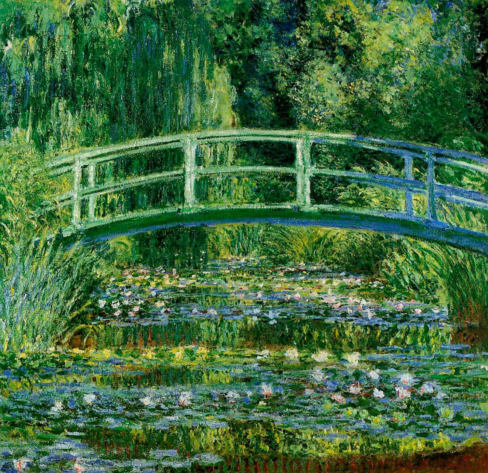
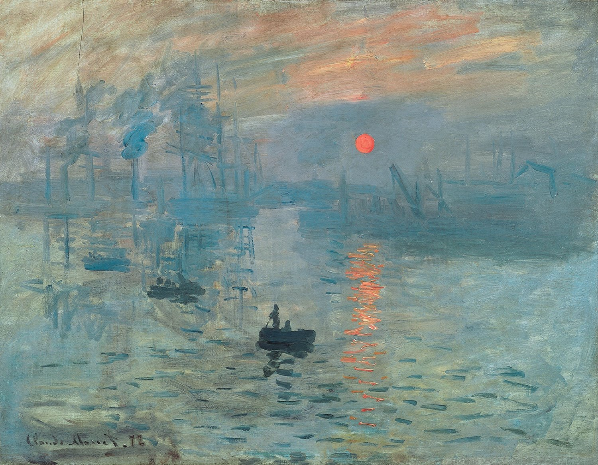
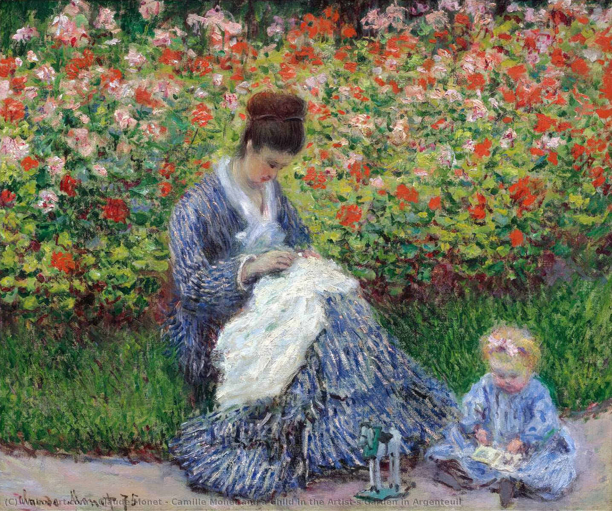
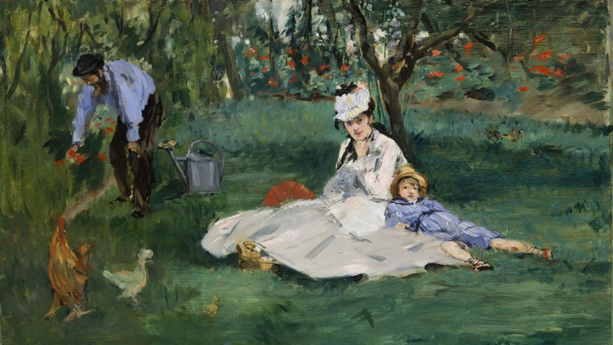
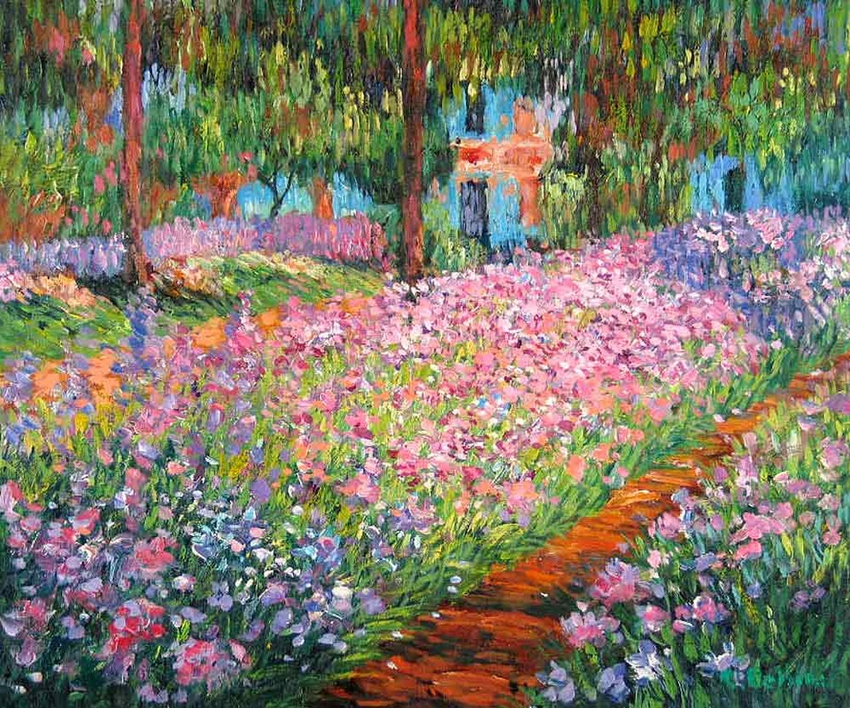
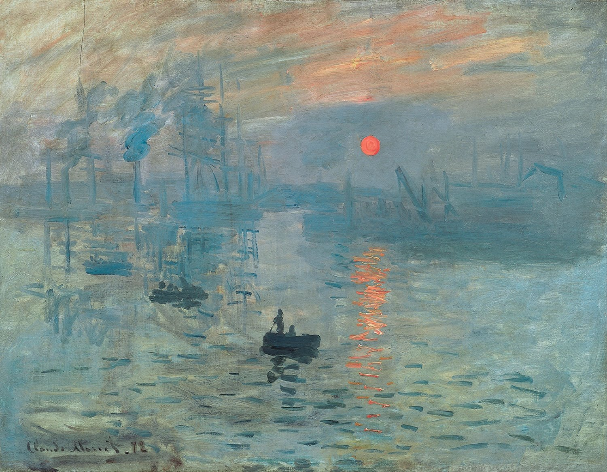
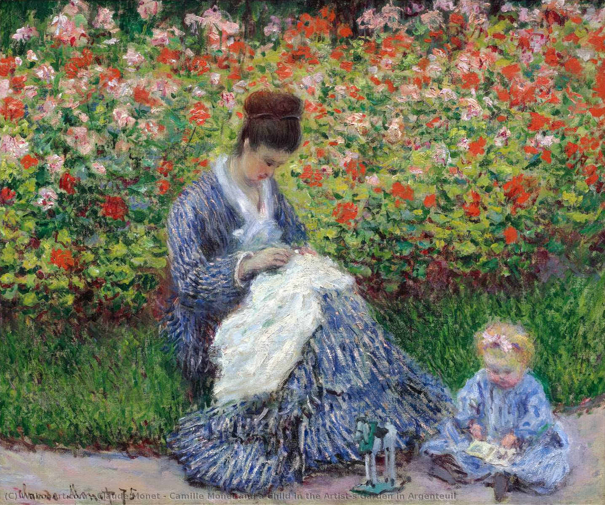
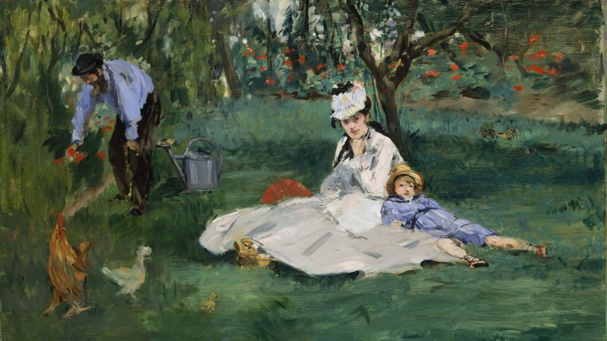
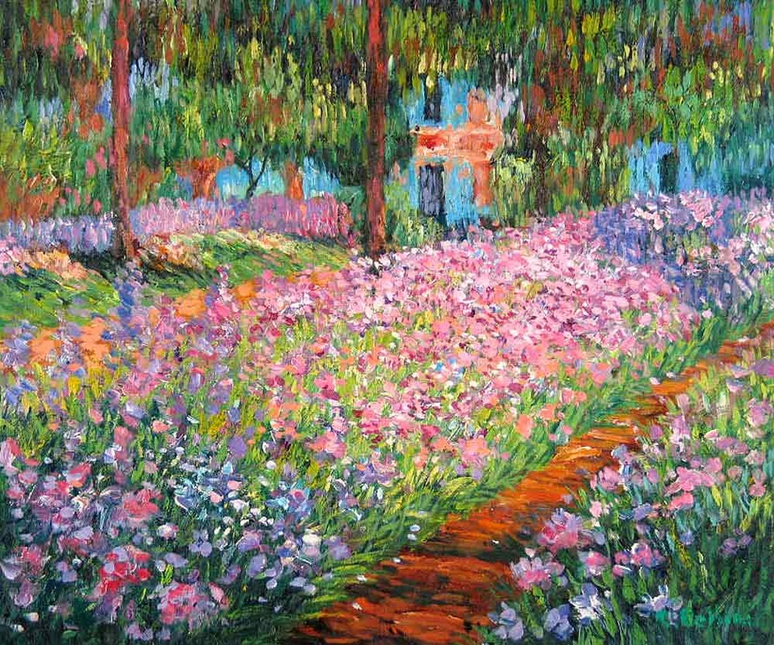

Claude Oscar Monet
Oscar-Claude Monet era figlio del droghiere Claude Adolphe Monet, che dopo avere solcato i mari europei in qualità di marinaio su una nave mercantile di Le Havre, era tornato a Parigi per sposare Louise-Justine Aubrée. Quest'unione fu coronata dalla nascita di Léon Pascal, nel 1836, e di Oscar, battezzato in questo modo dai genitori ma destinato a entrare nelle pagine dei libri di storia dell'arte come Claude Monet. Il piccolo Claude fu battezzato nella Chiesa di Notre-Dame-de-Lorette il 20 maggio 1841: egli, tuttavia, beneficiò poco del fervente clima culturale parigino perché, quando aveva solo cinque anni, la famiglia si trasferì a Le Havre, dove una sorellastra del padre aveva un commercio di articoli marittimi insieme al marito Jacques Lecarde.
 






